Traffic Re:View Final V5ปริมาณรถที่ทางแยกกรุงเทพมหานคร
Before · During · After COVID
DADS5001 | Final presentation V5
บทพูด / แหล่งอ้างอิง
งาน EDA จากไฟล์ bangkok_traffic_2560_Present (NotFinal) (5).xlsx ชีต traffic_data ข้อมูลยังเป็นฉบับร่างที่ผู้ใช้กำลังตรวจต้นทาง ไม่ใช่สำมะโนการจราจรทั้งเมือง
ที่มาและคำถามของโครงการ
ข้อมูลผลสำรวจทางแยกของ สจส. กรุงเทพมหานคร
1. หน่วยเดิมเปลี่ยนไปอย่างไรในสามช่วง?
2. สถานที่และประเภทรถเปลี่ยนเหมือนกันหรือไม่?
3. ผลไวต่อวันสำรวจและนิยาม Lockdown แค่ไหน?
บทพูด / แหล่งอ้างอิง
เว็บไซต์เผยแพร่รายงานผลสำรวจ คู่มืออธิบายงานเก็บข้อมูลเพื่อสนับสนุนงานจราจร เช่น การจัดการสัญญาณและงานวางแผน แต่ไม่ระบุเหตุผลของทุกจุดในไฟล์ เราจึงใช้ข้อมูลตอบเรื่องปริมาณรถ ไม่ตอบเรื่องความเร็วหรือปลายทางการเดินทาง
[('ผลสำรวจทางแยก สจส. กทม.', 'https://traffic.bangkok.go.th/re_intersection/intersection/intersection.html'), ('คู่มือ สจส. หมวดรถและงานสำรวจ หน้า 133–137', 'https://traffic.bangkok.go.th/TechnicalManuals/TTD.pdf#page=139')]
ฐานการเปรียบเทียบที่ใช้ร่วมกัน
แบ่งช่วงด้วย covid_period ตามไฟล์
Before 2017–2019 | During 2020–2021 | After 2022–2026-05-29
คัน/ชั่วโมง = รถ 6 หมวด ÷ ชั่วโมงสำรวจ
จับคู่ ทางแยก + ถนน + เวลา ครบสามช่วง
17,440 แถว → 17,250 ผ่านเกณฑ์ → 3,045 แถว / 721 หน่วย
บทพูด / แหล่งอ้างอิง
ไม่รวมปี 2016 ตามคำสั่งผู้ใช้ ไม่เติมวันสำรวจที่ไม่มีเป็นศูนย์ ค่าว่างเฉพาะหมวดรถแทนศูนย์ตามข้อตกลง แถวที่ไม่ผ่านเกณฑ์ 190 แถว; แถวที่มีการแทนศูนย์ในชุดผ่านเกณฑ์ 0 ดูสาเหตุและรายการตัดออกใน AUDIT.md; ปีล่าสุดไม่ใช้เทียบยอดเต็มปี
01 ข้อมูลครอบคลุมวันใดบ้าง
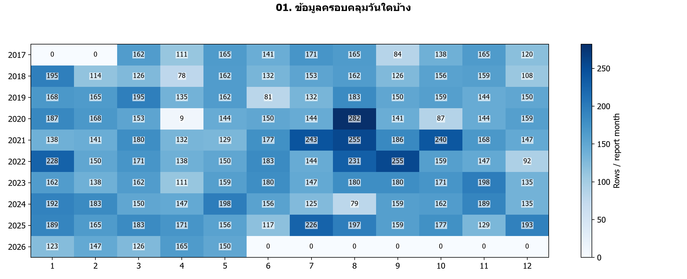
วันสำรวจ 2017-03-01 ถึง 2026-05-29 | 17,440 แถว → ผ่านเกณฑ์ 17,250 แถว
ข้อมูลเป็นวันสำรวจบางวัน และปีล่าสุดไม่ครบปี; ช่อง 0 คือไม่มีรายการในไฟล์
บทพูด / แหล่งอ้างอิง
อ่านกราฟ: สีและตัวเลขคือจำนวนแถวต่อเดือนรายงาน ไม่ใช่ปริมาณรถ
แนวพูด: เรามีข้อมูลหลายปี แต่ไม่ได้มีทุกแยกทุกวัน จึงรวมยอดรายปีมาเทียบตรง ๆ ไม่ได้
ข้อจำกัด: ข้อมูลเป็นวันสำรวจบางวัน และปีล่าสุดไม่ครบปี; ช่อง 0 คือไม่มีรายการในไฟล์
การนำไปใช้: เปรียบเทียบหน่วยเดิมและเวลาเดิมก่อนตีความ
ตาราง: tables/coverage.csv
02 ปริมาณรถในหน่วยที่จับคู่ครบสามช่วง
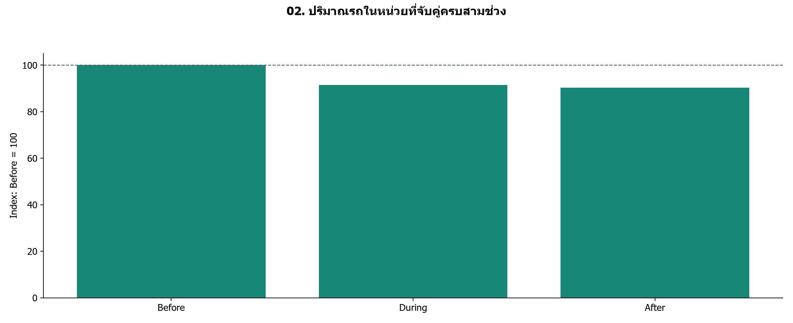
Before 100 → During 91.5 → After 90.2 | n=721 หน่วย
เป็นดัชนีของตัวอย่าง ไม่ใช่ยอดรถรวมทั้งเมือง; ไม่พิสูจน์ผลเชิงสาเหตุ
บทพูด / แหล่งอ้างอิง
อ่านกราฟ: ใช้มัธยฐานคัน/ชั่วโมงของแต่ละหน่วยในแต่ละช่วง หารฐาน Before ของหน่วยนั้น แล้วหามัธยฐานข้ามหน่วย
แนวพูด: ตั้ง Before ของแต่ละหน่วยเป็น 100 ผลภาพรวมคือ Before 100 → During 91.5 → After 90.2 | n=721 หน่วย จึงพบระดับต่ำกว่าฐานทั้งสองช่วง แต่ยังแยกสาเหตุไม่ได้ ช่วง 95%: During 87.9–94.9; After 86.6–93.0
ข้อจำกัด: เป็นดัชนีของตัวอย่าง ไม่ใช่ยอดรถรวมทั้งเมือง; ไม่พิสูจน์ผลเชิงสาเหตุ
การนำไปใช้: เริ่มดูการกระจายและสถานที่ เพราะค่ากลางอาจซ่อนความต่าง
ตาราง: tables/overview.csv
03 แต่ละหน่วยอยู่เหนือหรือต่ำกว่าฐาน
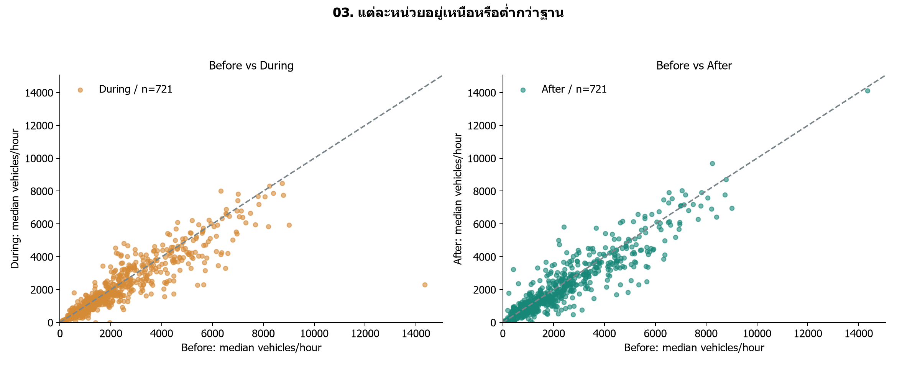
ต่ำกว่าฐาน: During 64.5% | After 65.3% ของ 721 หน่วย
จุดสำรวจไม่ได้เป็นตัวอย่างสุ่มทั้งกรุงเทพฯ; จุดบนแกนศูนย์ยังแสดงไว้
บทพูด / แหล่งอ้างอิง
อ่านกราฟ: หนึ่งจุดคือทางแยก–ถนน–ช่วงเวลา; จุดใต้เส้นทแยงมีปริมาณต่ำกว่า Before
แนวพูด: เส้นทแยงคือระดับเท่าเดิม เรามีทั้งจุดที่สูงขึ้นและต่ำลง ไม่ใช่ทุกแห่งเปลี่ยนไปในทิศทางเดียวกัน
ข้อจำกัด: จุดสำรวจไม่ได้เป็นตัวอย่างสุ่มทั้งกรุงเทพฯ; จุดบนแกนศูนย์ยังแสดงไว้
การนำไปใช้: ไม่ใช้ค่ากลางแทนการตัดสินทุกทางแยก
ตาราง: tables/matched_levels.csv
04 ค่ากลางซ่อนการกระจายมากแค่ไหน
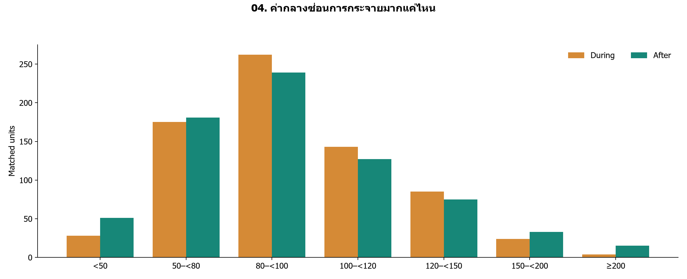
After มี 250/721 หน่วย (34.7%) ที่ไม่น้อยกว่าฐาน
ช่วงท้ายรวมดัชนีตั้งแต่ 200 ขึ้นไป; ฐานน้อยทำให้เปอร์เซ็นต์เปลี่ยนสูงได้
บทพูด / แหล่งอ้างอิง
อ่านกราฟ: แกนนอนเป็นช่วงดัชนี โดย 100 เท่าฐาน; แกนตั้งคือจำนวนหน่วย ใช้ชุดเดิมครบทั้งสองช่วง
แนวพูด: ค่า After ใกล้ 90 ไม่ได้แปลว่าทุกแยกลด 10 เปอร์เซ็นต์ กราฟนี้แสดงทั้งกลุ่มต่ำกว่าฐานและกลุ่มที่กลับมาไม่น้อยกว่าฐาน
ข้อจำกัด: ช่วงท้ายรวมดัชนีตั้งแต่ 200 ขึ้นไป; ฐานน้อยทำให้เปอร์เซ็นต์เปลี่ยนสูงได้
การนำไปใช้: ใช้ข้อมูลคัน/ชั่วโมงประกอบดัชนีเมื่อเลือกจุดศึกษา
ตาราง: tables/index_distribution.csv
05 การเปลี่ยนแปลงมีสี่รูปแบบ
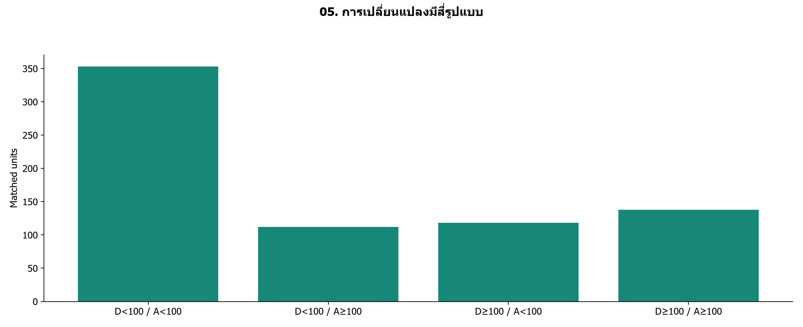
ต่ำกว่าฐานทั้งสองช่วง 353 หน่วย; During ต่ำ แต่ After ≥ ฐาน 112 หน่วย
เป็นการจำแนกระดับ ไม่ใช่เส้นทางรายปีต่อเนื่อง และไม่ใช่การทดสอบนัยสำคัญ
บทพูด / แหล่งอ้างอิง
อ่านกราฟ: D = During, A = After; แบ่งด้วยดัชนี 100 ของ Before โดยใช้หน่วยเดิมทั้งหมด
แนวพูด: การบอกเพียงว่าฟื้นหรือไม่ฟื้นยังหยาบเกินไป เราแยกได้สี่แบบ บางแห่งต่ำกว่าฐานทั้งสองช่วง บางแห่งกลับมาไม่น้อยกว่าฐานใน After
ข้อจำกัด: เป็นการจำแนกระดับ ไม่ใช่เส้นทางรายปีต่อเนื่อง และไม่ใช่การทดสอบนัยสำคัญ
การนำไปใช้: ใช้รูปแบบเป็นเกณฑ์เลือกกรณีศึกษาหรือสำรวจซ้ำ
ตาราง: tables/period_patterns.csv
06 ช่วงเวลาสำรวจให้ผลเหมือนกันหรือไม่
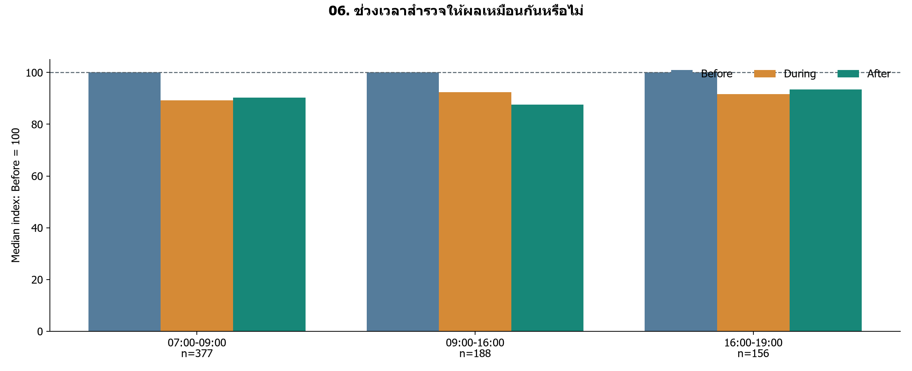
มี 3 ช่วงเวลาที่จับคู่ได้; จำนวนหน่วยต่อเวลา 156–377 หน่วย
กลุ่มเวลาประกอบด้วยสถานที่ต่างกัน จึงไม่ใช้สรุปว่าคนย้ายเวลาเดินทาง
บทพูด / แหล่งอ้างอิง
อ่านกราฟ: แต่ละกลุ่มเปรียบเทียบสามช่วงภายในเวลาเดียวกัน; ทุกค่าหารด้วยชั่วโมงสำรวจแล้ว
แนวพูด: เวลาเย็น 16–19 กับ 17–19 เป็นคนละหน่วย เราไม่รวมเพราะอาจทำให้ความหมายเปลี่ยน กลุ่มเล็กต้องอ่านด้วยความระมัดระวัง
ข้อจำกัด: กลุ่มเวลาประกอบด้วยสถานที่ต่างกัน จึงไม่ใช้สรุปว่าคนย้ายเวลาเดินทาง
การนำไปใช้: ถ้าจะตอบการย้ายเวลา ต้องจับคู่จุดและวันที่เดียวกันข้ามเวลาด้วย
ตาราง: tables/time_window_indices.csv
07 สถานที่ที่มีความต่างเด่น
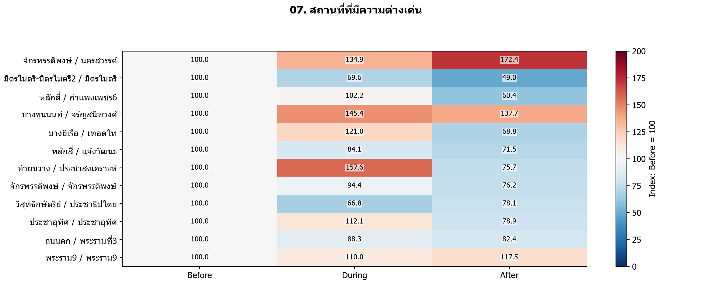
แสดง 12 คู่; สีแดงมากกว่า Before สีฟ้าต่ำกว่า Before และมีตัวเลขกำกับ
คัดผลต่างสูงเพื่อศึกษา ไม่เป็นตัวแทนทั้งเมือง; สีตัดที่ 200 แต่ตัวเลขไม่ตัด
บทพูด / แหล่งอ้างอิง
อ่านกราฟ: แสดงคู่เช้า 07–09 น. ที่มีอย่างน้อย 2 รายการทุกช่วง เลือก 12 คู่ที่ |After−100| มากที่สุด; สเกลสี 0–200
แนวพูด: หลังเห็นภาพรวม เราซูมไปยังจุดที่ต่างเด่น โดยเปิดเผยเกณฑ์เลือกตั้งแต่ต้น แล้วตรวจวันที่และประเภทรถต่อ
ข้อจำกัด: คัดผลต่างสูงเพื่อศึกษา ไม่เป็นตัวแทนทั้งเมือง; สีตัดที่ 200 แต่ตัวเลขไม่ตัด
การนำไปใช้: ทวนรายงานต้นทางก่อนตั้งสมมติฐานเรื่องบริบทพื้นที่
ตาราง: tables/location_lookup.csv
08 วันที่สำรวจของกรณีศึกษา
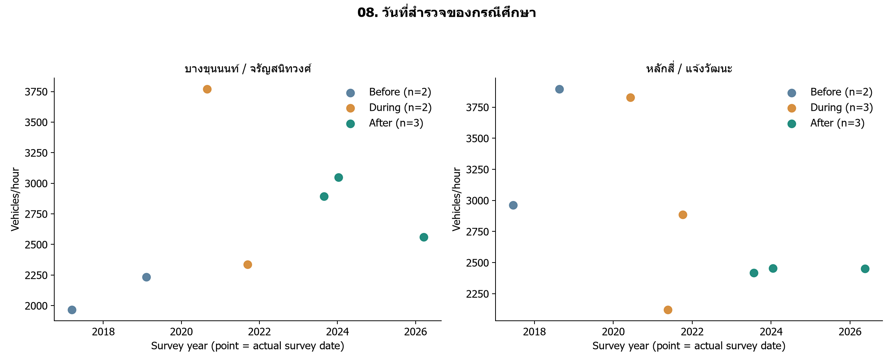
บางขุนนนท์: n=2/2/3; หลักสี่: n=2/3/3
บางขุนนนท์: เดือนร่วม []; หลักสี่: เดือนร่วม []; [] = ไม่มีเดือนร่วมครบสามช่วง ยังไม่มีหลักฐานเทศกาลหรือปลายทาง
บทพูด / แหล่งอ้างอิง
อ่านกราฟ: แต่ละจุดคือวันสำรวจจริง ไม่ลากเส้นเชื่อม; วันเต็มและแถว Excel อยู่ในตาราง
แนวพูด: จำนวนวันและเดือนของกรณีศึกษาอยู่ในตาราง แม้ค่าจะต่างชัด ก็ยังอธิบายไม่ได้ว่าเกิดจากโควิด เทศกาล งานก่อสร้าง หรือความผันผวนของวันสำรวจ
ข้อจำกัด: บางขุนนนท์: เดือนร่วม []; หลักสี่: เดือนร่วม []; [] = ไม่มีเดือนร่วมครบสามช่วง ยังไม่มีหลักฐานเทศกาลหรือปลายทาง
การนำไปใช้: ใช้วันนี้ไปตรวจ PDF และประวัติเหตุการณ์ แยกสิ่งยืนยันแล้วออกจากสมมติฐาน
ตาราง: tables/case_dates.csv
09 ประเภทรถที่ประกอบเป็นความต่างของพื้นที่
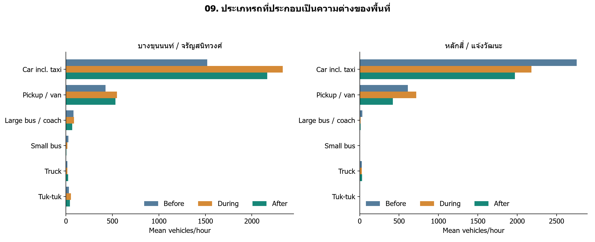
บางขุนนนท์: ดัชนีรถรวม After เทียบ Before +37.7%; หลักสี่: ดัชนีรถรวม After เทียบ Before -28.5%
เปอร์เซ็นต์รถรวมในข้อความคำนวณจากมัธยฐาน แต่แท่งหมวดรถเป็นค่าเฉลี่ย; ห้ามบวกมัธยฐานรายหมวดแทนรถรวม
บทพูด / แหล่งอ้างอิง
อ่านกราฟ: ทุกหมวดมี Before / During / After; ใช้ค่าเฉลี่ยคัน/ชั่วโมงเพื่อแสดงระดับของหมวดรถ
แนวพูด: ดูว่าหมวดใดมีระดับมากและหมวดใดเปลี่ยน โดยยังไม่ตีความว่าเป็นการเปลี่ยนพาหนะของคนกลุ่มเดิม
ข้อจำกัด: เปอร์เซ็นต์รถรวมในข้อความคำนวณจากมัธยฐาน แต่แท่งหมวดรถเป็นค่าเฉลี่ย; ห้ามบวกมัธยฐานรายหมวดแทนรถรวม
การนำไปใช้: ตรวจหมวดที่เปลี่ยนมากกับตารางนับรถต้นทาง
ตาราง: tables/case_vehicle_three_periods.csv
10 องค์ประกอบรถครบสามช่วง
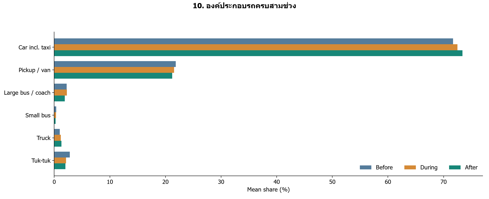
รถยนต์รวมแท็กซี่: 71.72% → 72.51% → 73.39% | n=719
n=719 หน่วย; สัดส่วนไม่ใช่จำนวน และชุดนี้ไม่มีจักรยานยนต์
บทพูด / แหล่งอ้างอิง
อ่านกราฟ: คำนวณสัดส่วนแต่ละรายการ → เฉลี่ยในหน่วย–ช่วง → เฉลี่ยข้ามหน่วยร่วมที่มีรถรวมบวกครบทุกช่วง
แนวพูด: รถยนต์เป็นหมวดใหญ่ที่สุดในหกหมวดที่เราเก็บได้ แต่ไม่ใช่ส่วนแบ่งทุกยานพาหนะของกรุงเทพฯ และไม่ใช่รถส่วนตัวทั้งหมด
ข้อจำกัด: n=719 หน่วย; สัดส่วนไม่ใช่จำนวน และชุดนี้ไม่มีจักรยานยนต์
การนำไปใช้: ใช้ประกอบการวางแผนสำรวจหมวดรถเพิ่มเติม
ตาราง: tables/mix_change.csv
11 สัดส่วนหมวดเล็กเปลี่ยนอย่างไร
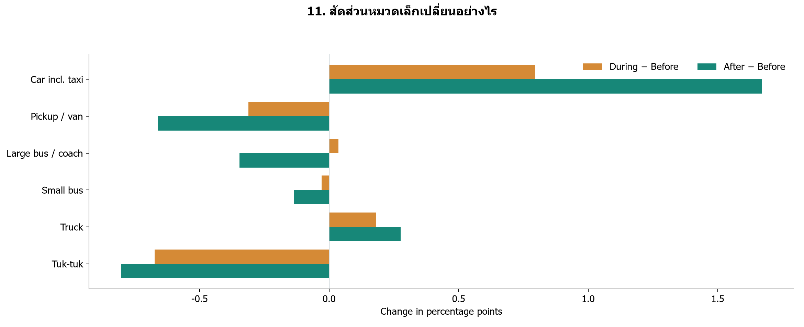
รถยนต์: During +0.80 จุด; After +1.67 จุด เทียบ Before
หมวดหนึ่งเพิ่ม ส่วนอื่นต้องลดรวมกันตามนิยามสัดส่วน; ไม่สรุปการย้ายจากรถเมล์ไปใช้รถส่วนตัว
บทพูด / แหล่งอ้างอิง
อ่านกราฟ: ค่าบวกคือส่วนแบ่งเพิ่ม ค่าลบคือส่วนแบ่งลด หน่วยเป็นจุดเปอร์เซ็นต์ ไม่ใช่เปอร์เซ็นต์การเติบโต
แนวพูด: กราฟก่อนเห็นโครงสร้างใหญ่ ส่วนกราฟนี้ขยายการเปลี่ยนของแต่ละหมวดโดยใช้แกนศูนย์ร่วมกัน
ข้อจำกัด: หมวดหนึ่งเพิ่ม ส่วนอื่นต้องลดรวมกันตามนิยามสัดส่วน; ไม่สรุปการย้ายจากรถเมล์ไปใช้รถส่วนตัว
การนำไปใช้: ถ้าจะศึกษาการเปลี่ยนวิธีเดินทาง ต้องมีข้อมูลผู้เดินทางหรือผู้โดยสารเพิ่ม
ตาราง: tables/mix_delta.csv
12 Lockdown ภายในช่วง During
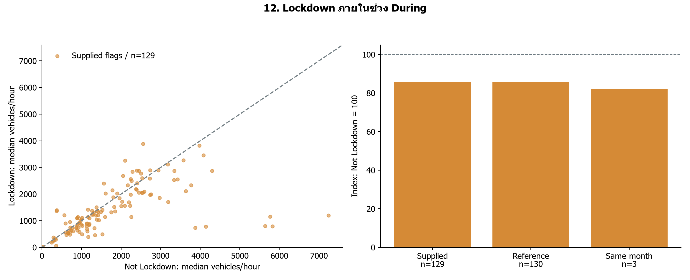
ตาม flag ในไฟล์ n=129: ดัชนี 85.7 | เทียบกรอบวันที่ 85.9
flag ต่างจากกรอบวันที่อ้างอิง 168 แถว; คุมเดือนเหลือ 3 หน่วย จึงไม่สรุปเชิงสาเหตุ
บทพูด / แหล่งอ้างอิง
อ่านกราฟ: จับคู่ทางแยก–ถนน–เวลา ภายใน During เท่านั้น; กราฟขวาเทียบนิยามและเงื่อนไขเดือน
แนวพูด: ผลตาม flag พบระดับต่ำกว่า Not Lockdown แต่วันสำรวจและนิยามยังมีข้อจำกัด เราคง flag ของผู้ใช้และแสดงผลอีกนิยามประกอบ
ข้อจำกัด: flag ต่างจากกรอบวันที่อ้างอิง 168 แถว; คุมเดือนเหลือ 3 หน่วย จึงไม่สรุปเชิงสาเหตุ
การนำไปใช้: ยืนยันเกณฑ์วันสิ้นสุดและทวนแถว flag ก่อนอ้างเป็นผลของมาตรการ
ตาราง: tables/lockdown_summary.csv
13 ข้อสรุปเปลี่ยนเมื่อจับคู่ละเอียดขึ้นหรือไม่
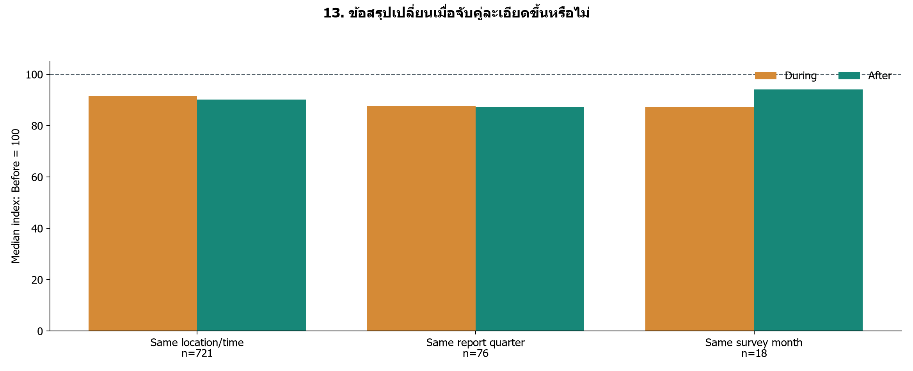
n=721: During 91.5, After 90.2; n=76: During 87.7, After 87.3; n=18: During 87.3, After 94.1
ขนาดและสมาชิกเปลี่ยน จึงแยกผลของการคุมปฏิทินออกจากการเปลี่ยนตัวอย่างไม่ได้
บทพูด / แหล่งอ้างอิง
อ่านกราฟ: เพิ่มเงื่อนไขไตรมาสรายงานหรือเดือนสำรวจ โดยสร้างกลุ่มจับคู่ใหม่ในแต่ละวิธี
แนวพูด: ทุกวิธีในรอบนี้ต่ำกว่าฐาน Before แต่ After เทียบ During ไม่ได้เรียงเหมือนกันทุกวิธี จึงไม่ควรสรุปเส้นทางการฟื้นจากค่ากลางวิธีเดียว
ข้อจำกัด: ขนาดและสมาชิกเปลี่ยน จึงแยกผลของการคุมปฏิทินออกจากการเปลี่ยนตัวอย่างไม่ได้
การนำไปใช้: รายงานผลหลักพร้อมความไว และวางแผนเก็บจุดเดิมเดือนเดิม
ตาราง: tables/sensitivity.csv
สิ่งที่ข้อมูลตอบได้
1. Before 100 → During 91.5 → After 90.2 | n=721 หน่วย
2. แต่ละจุดเปลี่ยนต่างกัน จึงใช้ค่ากลางแทนทุกพื้นที่ไม่ได้
3. Lockdown ตาม flag มีดัชนี 85.7 แต่ยังมีข้อจำกัดปฏิทิน
พบความสัมพันธ์กับช่วงเวลา ยังยืนยันไม่ได้ว่าโควิดเป็นสาเหตุทั้งหมด
บทพูด / แหล่งอ้างอิง
คำตอบต่อคำถามว่าโควิดส่งผลหรือไม่คือ ข้อมูลนี้พบปริมาณต่างกันระหว่างช่วงที่นิยามไว้และสอดคล้องกับสมมติฐานว่าการเดินทางเปลี่ยน แต่ EDA นี้ไม่มีสถานการณ์เปรียบเทียบที่ตัดปัจจัยอื่นออก จึงระบุผลเชิงสาเหตุไม่ได้ การลงทุนหรือมาตรการเฉพาะทางแยกยังต้องตรวจข้อมูลเพิ่ม
ข้อเสนอแนะจากผลวิเคราะห์
สำรวจซ้ำ: จุดเดิม เวลาเดิม เดือนและประเภทวันใกล้เคียงกัน
ตรวจต้นทาง: จุดที่เปลี่ยนมากและวันที่กรณีศึกษา
ยืนยัน Lockdown: แยกปิดสถานที่ เคอร์ฟิว และภาวะฉุกเฉิน
ถ้าศึกษารถติด: เพิ่มความเร็ว เวลาเดินทาง หรือแถวคอย
บทพูด / แหล่งอ้างอิง
ผลนี้ช่วยจัดลำดับประเด็นตรวจเพิ่มได้ แต่ยังไม่ใช้สั่งปรับสัญญาณไฟหรือเพิ่มรถเมล์จากจำนวนรถอย่างเดียว งานยังอยู่ในขอบเขต Pandas/NumPy/Matplotlib และการอธิบาย EDA ไม่จำเป็นต้องเพิ่ม ML
แหล่งข้อมูลและบทบาท AI
สจส. กทม.: รายงานทางแยกและคู่มือปฏิบัติงาน
ไทยโพสต์ / BBC: บริบทวันเริ่มมาตรการตามแหล่งที่ให้
FHWA: บริบทการควบคุมเวลาและฤดูกาล
AI: ช่วยโค้ด ตรวจสูตร และร่างคำอธิบาย
ผู้จัดทำต้องตรวจข้อมูลต้นทางและรับผิดชอบข้อสรุป
บทพูด / แหล่งอ้างอิง
ผลสำรวจทางแยก สจส. กทม.: https://traffic.bangkok.go.th/re_intersection/intersection/intersection.html
คู่มือ สจส. หมวดรถและงานสำรวจ หน้า 133–137: https://traffic.bangkok.go.th/TechnicalManuals/TTD.pdf#page=139
ปิดสถานที่ 22 มี.ค.–12 เม.ย. 2020: https://www.thaipost.net/main/detail/60470
เริ่มมาตรการ 12 ก.ค. 2021; ไม่ยืนยันวันสิ้นสุด: https://www.bbc.com/thai/thailand-57773493
FHWA: บริบทความต่างตามวันและฤดูกาล: https://www.fhwa.dot.gov/policyinformation/tmguide/tmg_2022/traffic-data-methodologies.cfm
แหล่งราชกิจจาฯ ที่ผู้ใช้ให้ยังไม่ได้ตรวจ PDF สำเร็จ ไม่ใช้ยืนยันว่าเป็นมาตรการเดียวกัน บทความ BBC ยังไม่ยืนยัน 30 ก.ย. 2021 เป็นวันสิ้นสุด
ภาคผนวก 14 วันสำรวจของกลุ่มจับคู่เหมือนกันหรือไม่
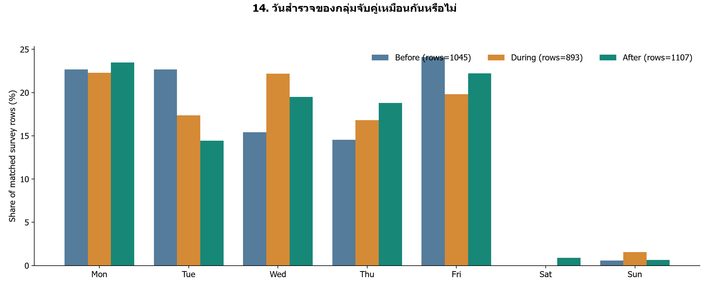
ใช้ 3,045 แถวที่อยู่ใน 721 หน่วยจับคู่
หลายแถวอาจเป็นวันเดียวกันหรือแยกเดียวกัน; ไม่ได้ตรวจวันหยุดและเทศกาล
บทพูด / แหล่งอ้างอิง
สัดส่วนแถวสำรวจตามวันในสัปดาห์ ไม่ใช่สัดส่วนจำนวนรถ; ชุดหลักเดียวกับกราฟภาพรวม
แม้จะจับคู่สถานที่และเวลาแล้ว วันที่เก็บยังต่างกันได้ กราฟนี้ไว้ตอบคำถามเรื่องปฏิทิน ไม่ใช้สรุปว่าวันใดรถมาก
หลายแถวอาจเป็นวันเดียวกันหรือแยกเดียวกัน; ไม่ได้ตรวจวันหยุดและเทศกาล
ภาคผนวก: นิยามและข้อจำกัดสำคัญ
รถยนต์รวมแท็กซี่/แวน; เมล์ใหญ่รวมรถทัวร์/สวัสดิการ
ไม่มีจักรยานยนต์ และไม่มีจำนวนผู้โดยสาร
Not Lockdown = flag 0 ไม่ใช่ไม่มีมาตรการทุกชนิด
flag ต่างจากกรอบวันที่อ้างอิง 168 แถว
วันสิ้นสุด 30 ก.ย. 2021 ยังต้องยืนยันประกาศ
บทพูด / แหล่งอ้างอิง
กรอบความไวใช้ 22 มี.ค.–12 เม.ย. 2020 และ 12 ก.ค.–30 ก.ย. 2021 รวมวันต้น/ปลาย ตามนิยามผู้ใช้ ไม่เปลี่ยน flag ในไฟล์; ภาวะฉุกเฉิน 26 มี.ค.–30 เม.ย. เป็นคนละนิยาม ไม่รวมโดยอัตโนมัติ; นิยามรถดูคู่มือ สจส. หน้า 133–137
ภาคผนวก: คำถามที่คาดว่าจะได้รับ
ทำไมไม่เทียบยอดรวมรายปี? → จุดและจำนวนวันสำรวจไม่เท่ากัน
ทำไมใช้คัน/ชั่วโมง? → ความยาวช่วงสำรวจต่างกัน
รู้หรือไม่ว่ารถไปไหน? → ไม่มีข้อมูลต้นทาง–ปลายทาง
เทศกาลอธิบายได้ไหม? → ต้องตรวจวันและหลักฐานเหตุการณ์เพิ่ม
สรุปว่าโควิดทำให้ลดได้ไหม? → ยังไม่ใช่ผลเชิงสาเหตุ
บทพูด / แหล่งอ้างอิง
สำหรับคำถามสถิติ: ช่วงความไม่แน่นอนใช้ cluster bootstrap ตามทางแยก 1,000 รอบ seed 5001 เป็นผลประกอบ ไม่ได้แก้ selection bias และไม่ได้ทดสอบ After เทียบ During โดยตรง สำหรับข้อมูลใหม่ให้รัน audit ก่อนอ่านกราฟ เพราะจำนวนคู่และกรณีศึกษาอาจเปลี่ยน